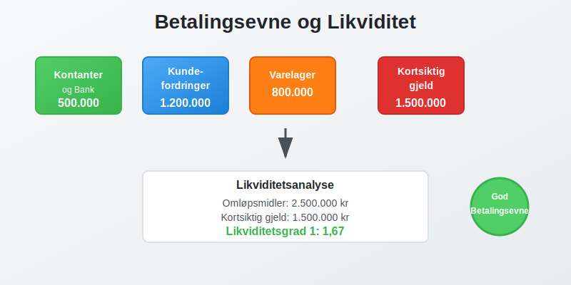
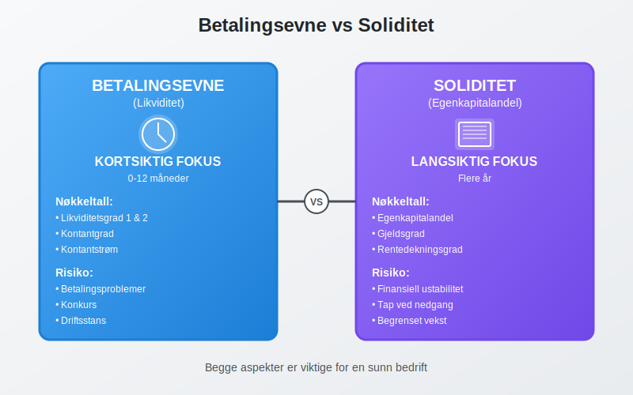
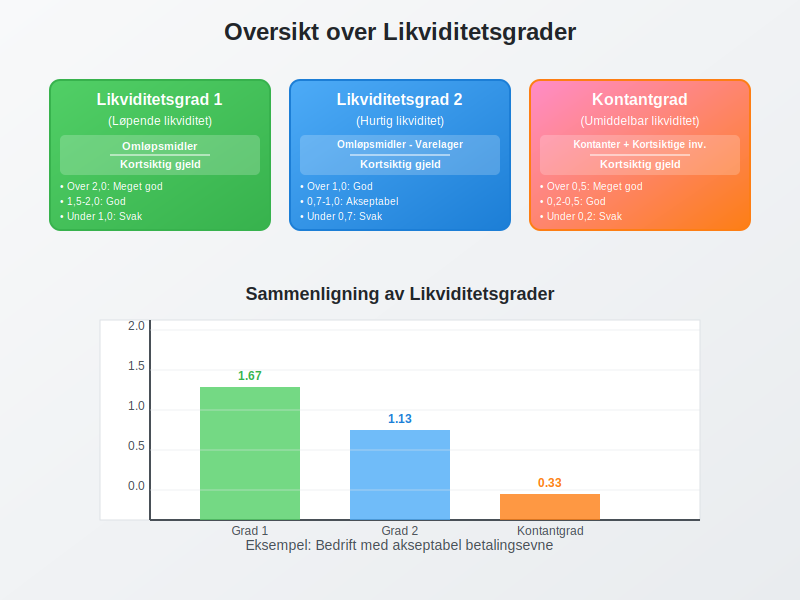
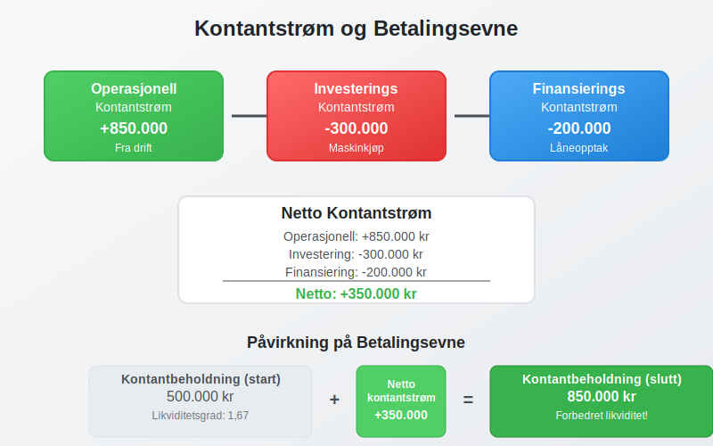
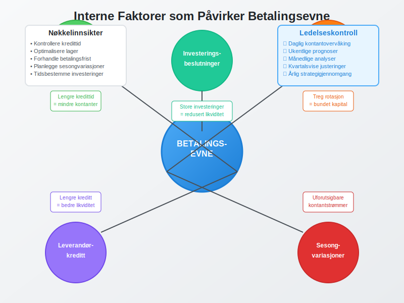
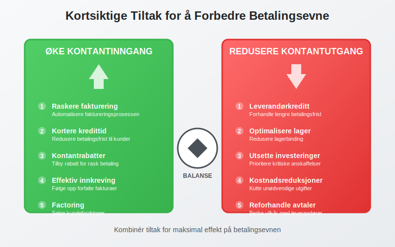
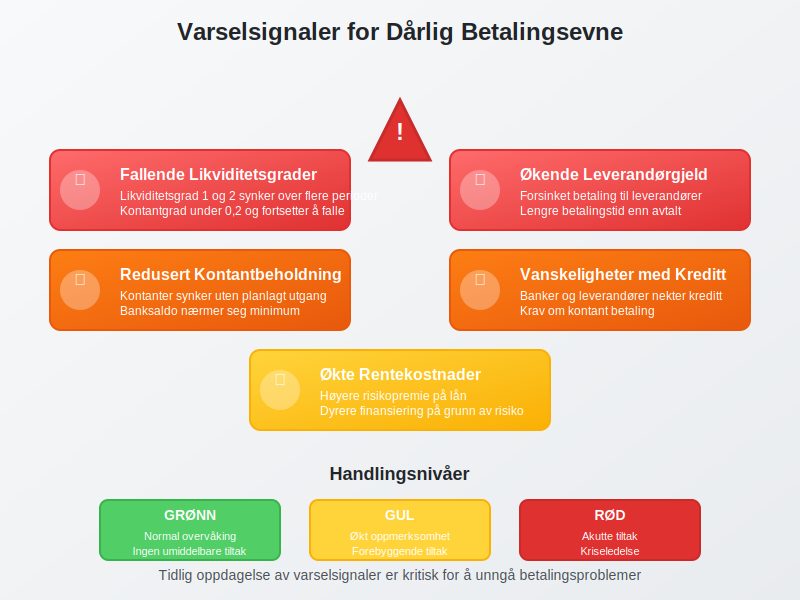
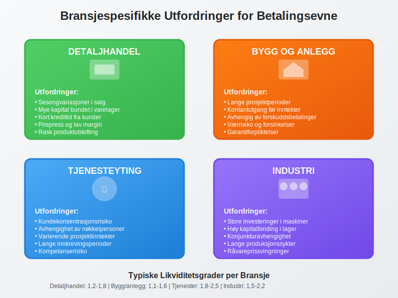
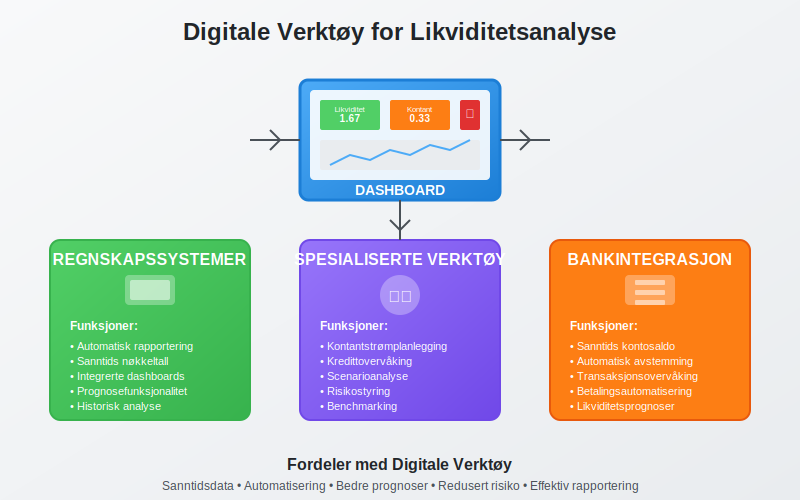

Betalingsevne er bedriftens evne til å oppfylle sine finansielle forpliktelser når de forfaller. Dette er et kritisk aspekt av arbeidskapital-styring og påvirker direkte bedriftens overlevelse og vekstmuligheter.
For en oversikt over relevante betalingstjenester og deres regnskapsmessige behandling, se Hva er betalingstjeneste?.

For å forbedre kredittrisikoen, kan bedrifter innhente gjeldsinformasjon fra Gjeldsregisteret for å få en mer komplett oversikt over en kundes usikrede gjeld.
Hva er Betalingsevne?
Betalingsevne, også kalt likviditet, refererer til hvor lett en bedrift kan konvertere sine aktiva til kontanter for å dekke kortsiktige forpliktelser. God betalingsevne sikrer:
- Kontinuerlig drift uten avbrudd i leveranser eller tjenester
- Kredittillit hos leverandører og finansinstitusjoner
- Vekstmuligheter gjennom investeringer og ekspansjon
- Konkurransefortrinn ved å kunne utnytte markedsmuligheter raskt
- Finansiell stabilitet som beskytter mot økonomiske sjokk
Forskjellen på Betalingsevne og Soliditet
Det er viktig å skille mellom betalingsevne og soliditet:

| Aspekt | Betalingsevne | Soliditet |
|---|---|---|
| Tidsperspektiv | Kortsiktig (0-12 måneder) | Langsiktig (flere år) |
| Fokus | Likviditet og kontantstrøm | Egenkapitalandel og gjeldsgrad |
| Måling | Likviditetsgrad, kontantbeholdning | Egenkapitalandel, gjeldsgrad |
| Risiko | Betalingsproblemer, konkurs | Finansiell ustabilitet, tap |
Likviditetsanalyse og Nøkkeltall
Likviditetsgrader
Likviditetsgrader er de mest brukte målene for betalingsevne:

1. Likviditetsgrad 1 (Løpende likviditet)
Likviditetsgrad 1 = Omløpsmidler ÷ Kortsiktig gjeld
Tolkning:
- Over 2,0: Meget god betalingsevne
- 1,5-2,0: God betalingsevne
- 1,0-1,5: Akseptabel betalingsevne
- Under 1,0: Svak betalingsevne
2. Likviditetsgrad 2 (Hurtig likviditet)
Likviditetsgrad 2 = (Omløpsmidler - Varelager) ÷ Kortsiktig gjeld
Denne graden ekskluderer varelager som kan være vanskelig å konvertere til kontanter raskt.
3. Kontantgrad (Umiddelbar likviditet)
Kontantgrad = (Kontanter + Kortsiktige investeringer) ÷ Kortsiktig gjeld
Praktisk Eksempel: Likviditetsanalyse
La oss analysere betalingsevnen til Eksempel AS:
| Balansepost | Beløp (NOK) |
|---|---|
| Omløpsmidler: | |
| Kassebeholdning og bankinnskudd | 500.000 |
| Kundefordringer | 1.200.000 |
| Varelager | 800.000 |
| Sum omløpsmidler | 2.500.000 |
| Kortsiktig gjeld | 1.500.000 |
Beregninger:
- Likviditetsgrad 1: 2.500.000 ÷ 1.500.000 = 1,67
- Likviditetsgrad 2: (2.500.000 - 800.000) ÷ 1.500.000 = 1,13
- Kontantgrad: 500.000 ÷ 1.500.000 = 0,33
Analyse: Bedriften har akseptabel betalingsevne, men er avhengig av å konvertere kundefordringer og varelager til kontanter.
Kontantstrømanalyse
Betydningen av Kontantstrøm
Kontantstrøm er den faktiske bevegelsen av kontanter inn og ut av bedriften. Selv lønnsomme bedrifter kan få betalingsproblemer hvis kontantstrømmen er negativ. Effektiv likviditetsstyring er derfor avgjørende for å opprettholde god betalingsevne.

Typer Kontantstrøm
| Type | Beskrivelse | Påvirkning på betalingsevne |
|---|---|---|
| Operasjonell | Fra daglig drift | Viktigst for kortsiktig betalingsevne |
| Investering | Fra kjøp/salg av anleggsmidler | Påvirker langsiktig kapasitet |
| Finansiering | Fra lån og egenkapital | Støtter betalingsevne ved behov |
Kontantstrømprognose
En kontantstrømprognose er essensielt for å forutse betalingsevne. For dyptgående analyseteknikker og strategier for kontantstrømoptimalisering, se vår omfattende guide til kontantstrømanalyse.
Kontantbeholdning (slutt) = Kontantbeholdning (start) +
Kontantinngang - Kontantutgang
Effektiv kontantbeholdning krever strategisk planlegging av både kortsiktige og langsiktige kontantbehov.
Faktorer som Påvirker Betalingsevne
Interne Faktorer

- Kredittid til kunder: Lengre kredittid reduserer kontantinngang
- Lagerrotasjon: Treg lageromsetning binder kapital
- Leverandørkreditt: Lengre betalingsfrist forbedrer likviditet
- Sesongvariasjoner: Påvirker både inntekter og kostnader
- Investeringsbeslutninger: Store investeringer kan påvirke likviditet
Eksterne Faktorer
- Markedsforhold: Påvirker salg og innbetalinger
- Rentenivå: Høyere renter øker finansieringskostnader
- Konjunkturer: Lavkonjunktur kan forsinke kundebetalinger
- Regulatoriske endringer: Nye krav kan påvirke kontantstrøm
- Valutasvingninger: For bedrifter med utenlandsk handel
Strategier for å Forbedre Betalingsevne
Kortsiktige Tiltak

Øke Kontantinngang
- Raskere fakturering: Automatisere faktureringsprosessen
- Kortere kredittid: Redusere betalingsfrist til kunder
- Kontantrabatter: Tilby rabatt for rask betaling
- Effektiv innkreving: Følge opp forfalte fakturaer med betalingspåminnelser
- Factoring: Selge kundefordringer til factoringselskap for umiddelbar kontantstrøm
Redusere Kontantutgang
- Forhandle leverandørkreditt: Få lengre betalingsfrist
- Optimalisere lager: Redusere lagerbinding
- Utsette investeringer: Prioritere kritiske anskaffelser
- Kostnadsreduksjoner: Kutte unødvendige utgifter
Langsiktige Strategier
Strukturelle Forbedringer
- Diversifisere kundebase: Redusere avhengighet av store kunder
- Forbedre produktmiks: Fokusere på lønnsomme produkter
- Investere i teknologi: Automatisere prosesser
- Styrke markedsposisjon: Bygge konkurransefortrinn
Finansiell Planlegging
- Etablere kredittlinjer: Sikre tilgang til finansiering
- Bygge kontantreserver: Opprettholde likviditetsbuffer
- Overvåke nøkkeltall: Implementere dashboards og rapporter
- Scenarioplanlegging: Forberede på ulike markedssituasjoner
- Budsjettering: Systematisk planlegging av kontantstrømmer og likviditetsbehov
- Alternative finansieringsmetoder: Vurdere crowdfunding eller crowdlending for rask kapitaltilgang uten tradisjonelle banklån
Risikostyring og Betalingsevne
Identifisering av Likviditetsrisiko
Likviditetsrisiko oppstår når bedriften ikke kan møte sine betalingsforpliktelser. Systematisk likviditetsstyring kan bidra til å identifisere og håndtere slike risikoer proaktivt. Tidlige varselsignaler inkluderer:

- Fallende likviditetsgrader over flere perioder
- Økende leverandørgjeld og forsinket betaling
- Redusert kontantbeholdning uten planlagt utgang
- Vanskeligheter med å få kreditt fra banker eller leverandører
- Økte rentekostnader på grunn av høyere risikopremie
Beredskapsplaner
En god likviditetsberedskap inkluderer:
| Beredskapsnivå | Tiltak | Tidshorisont |
|---|---|---|
| Grønn | Normal drift, overvåking | Kontinuerlig |
| Gul | Reduserte investeringer, økt fokus | 1-3 måneder |
| Rød | Akutte tiltak, ekstern finansiering | Umiddelbart |
Betalingsevne i Ulike Bransjer
Bransjespesifikke Utfordringer

Detaljhandel
- Sesongvariasjoner: Store svingninger i kontantstrøm
- Lagerrisiko: Mye kapital bundet i varelager
- Kort kredittid: Kunder betaler ofte kontant eller kort
Bygg og anlegg
- Lange prosjekter: Kontantutgang før inntekter
- Forskuddsbetalinger: Avhengig av kundeforskudd
- Værrisiko: Kan påvirke fremdrift og kostnader
Tjenesteyting
- Lav kapitalbinding: Mindre behov for arbeidskapital
- Kundekonsentrasjonsrisiko: Avhengighet av store kunder
- Kompetanserisiko: Tap av nøkkelpersoner
Benchmarking
Sammenligning med bransjegjennomsnitt er viktig for å vurdere betalingsevne:
| Bransje | Typisk likviditetsgrad 1 | Typisk kontantgrad |
|---|---|---|
| Detaljhandel | 1,2-1,8 | 0,1-0,3 |
| Industri | 1,5-2,2 | 0,2-0,4 |
| Tjenester | 1,8-2,5 | 0,3-0,6 |
| Bygg/anlegg | 1,1-1,6 | 0,1-0,2 |
Digitale Verktøy for Betalingsevneanalyse
Moderne Løsninger

Regnskapssystemer
- Automatisk rapportering av likviditetsnøkkeltall
- Integrerte dashboards for sanntidsovervåking
- Prognosefunksjonalitet basert på historiske data
Spesialiserte Verktøy
- Kontantstrømplanlegging: Detaljerte prognoser
- Kredittovervåking: Automatisk oppfølging av kundefordringer
- Bankintegrasjon: Sanntids kontosaldo og transaksjoner
Implementering av Overvåkingssystemer
En effektiv overvåking av betalingsevne bør inkludere:
- Daglig rapportering av kontantbeholdning
- Ukentlige prognoser for kommende 13 uker
- Månedlige analyser av likviditetsnøkkeltall
- Kvartalsvis benchmarking mot bransjen
Juridiske Aspekter ved Betalingsproblemer
Konsekvenser av Dårlig Betalingsevne
Når betalingsevnen svikter, kan det få alvorlige juridiske konsekvenser:
Konkursrisiko
- Betalingsudyktighet: Kan ikke betale forfalt gjeld. Se Hva er Insolvens? for mer informasjon.
- Illiquiditet: Mangler likvide midler til å dekke forpliktelser
- Konkursbegjæring: Kan fremmes av kreditorer eller bedriften selv
Ansvar for Ledelsen
- Aktsomhetsplikt: Ledelsen må handle forsvarlig
- Informasjonsplikt: Varsle styret om betalingsproblemer
- Erstatningsansvar: Ved uforsvarlig videreføring
Forebyggende Tiltak
For å unngå juridiske problemer:
- Regelmessig overvåking av betalingsevne
- Tidlig varsling til styret ved problemer
- Profesjonell rådgivning ved finansielle utfordringer
- Dokumentasjon av beslutninger og tiltak
Konklusjon
Betalingsevne er fundamentalt for enhver bedrifts overlevelse og vekst. God likviditetsstyring krever:
- Kontinuerlig overvåking av nøkkeltall og kontantstrøm
- Proaktiv planlegging med prognoser og scenarioanalyser
- Balansert tilnærming mellom vekst og finansiell stabilitet
- Beredskapsplaner for å håndtere utfordringer
Ved å forstå og aktivt styre betalingsevnen kan bedrifter sikre stabil drift, utnytte vekstmuligheter og bygge langsiktig konkurransefortrinn. Dette krever både analytiske ferdigheter, strategisk tenkning og operasjonell disiplin.
Husk at betalingsevne ikke bare handler om å overleve - det handler om å skape grunnlag for bærekraftig vekst og verdiskaping. En bedrift med sterk betalingsevne har frihet til å investere, innovere og utnytte markedsmuligheter når de oppstår.